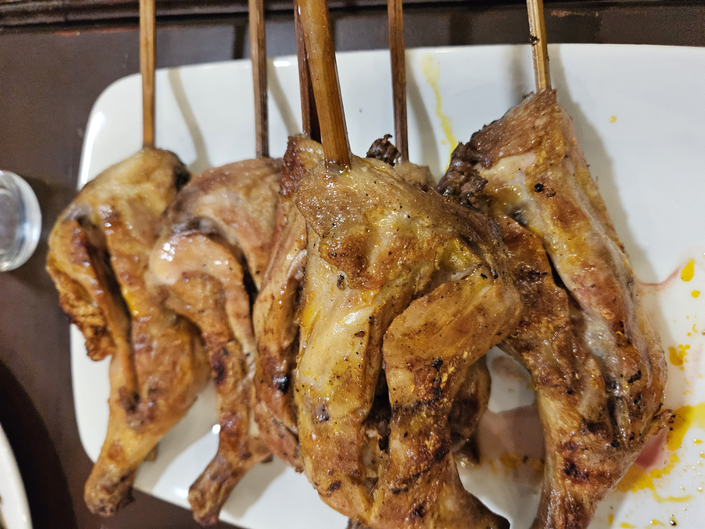
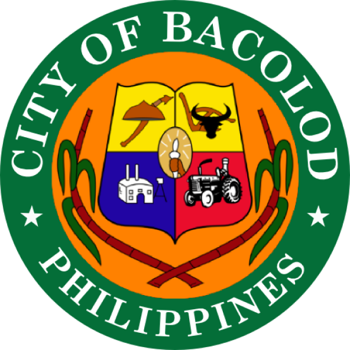
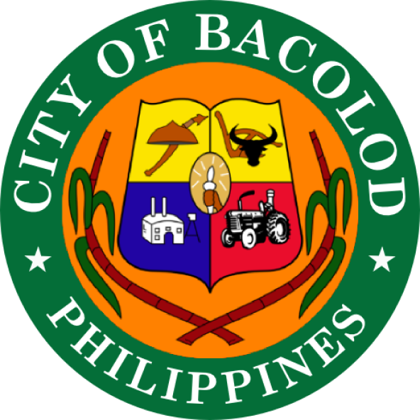

Secure a spot for the event now, REGISTER HERE
You cannot leave Bacolod without trying the food that it is famous for; be a part of TeamTikim for a day. Try the savory cansi which is beef with bone cooked in broth for hours with spices and batwan. Cansi is one of the best street foods in Asia by the World Street Food Congress.
60% of the sugar industry is based here in Negros so why not try the food that reflects our penchant for sweets; from napoleones to huge melts- in-your-mouth ensaimadas, crunchy piaya, and many more. One can never go wrong with choosing this route.
Degustation at Lanai for lunch will surely make you appreciate good, clean, and fair food.
In the afternoon, visit the Hand Made Gallery and learn the basics of assembling a windchime. Surely something to bring back home.
Early Dinner at Casa A. Gamboa which is near the airport.


 



Copyright 2023 Philippines Department of Tourism